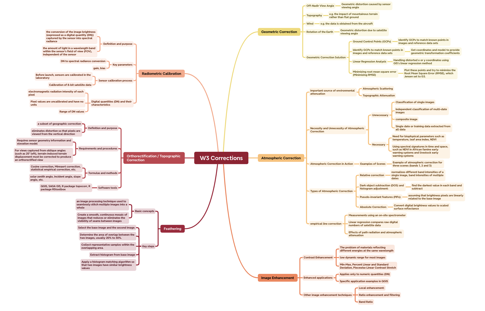
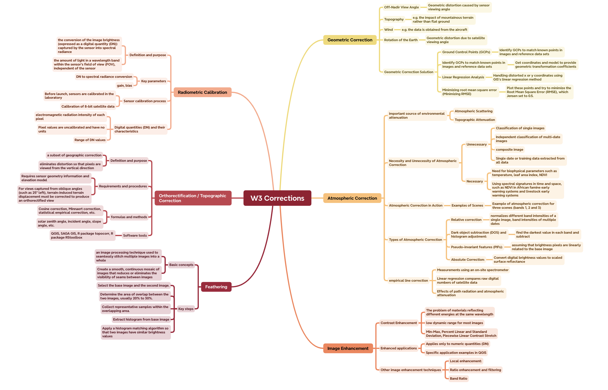

knitr::include_graphics("figures/week2-mindmap.png")
This week’s session offered a comprehensive introduction to remote sensing, emphasizing its pivotal role in urban and environmental studies. The lecture detailed various technologies, particularly the distinction between passive and active sensors, and their interaction with electromagnetic waves. In the practical session, we applied these concepts using Sentinel and Landsat data, focusing on York’ s urban landscape. It was a blend of theoretical understanding and practical data analysis. This is a mind map about lecture slides.
knitr::include_graphics("figures/week2-mindmap.png")
Remote sensing technology is widely used in many fields, such as:
1. Environmental monitoring and protection: Remote sensing is used to monitor environmental problems such as deforestation, water pollution, and desertification.
2. Agriculture: Crop health monitoring, land use analysis, yield estimation.
3. Urban planning and management: urban expansion analysis, transportation planning, infrastructure development.
4. Disaster management: assessment and response to natural disasters such as floods, earthquakes, and fires.
5. Climate change research: climate model analysis, global temperature change monitoring, and polar ice cap melting.
6. National defense and security: border surveillance, military reconnaissance.
7. Geological research: mineral and resource detection, geological structure analysis.
8. Oceanography: Marine pollution monitoring, marine ecosystem research.
I was intrigued by how remote sensing is applied in real-world scenarios, particularly in urban planning and environmental monitoring. The practical session’s data analysis highlighted this application vividly. It allowed me to see firsthand how remote sensing data could be used to observe and assess urban expansion and land use changes. I am also interested in the application of remote sensing in disaster management. One study shows that Remote sensing technology is extensively utilized in defining surface water bodies, estimating meteorological variables like temperature and precipitation, assessing hydrological states such as soil moisture and surface characteristics, and calculating fluxes including evapotranspiration. With the advent of high-resolution satellite data, near-real-time monitoring of floods, droughts, and irrigation management has become increasingly feasible. This advancement enables more efficient and accurate environmental monitoring and resource management (D. and T. V., 2013). Additionally, in Eguchi et al. (2008) studied the application of remote sensing to the magnitude 6.7 earthquake that occurred in Los Angeles on January 17, 1994, the example of bridge collapse could be used for model calibration and validation. They show that remote sensing data can provide a quick and low-risk overview over an extended geographical area, and therefore assess building damage with remote sensing data having significant advantages over ground surveys.
Both studies focus on the application of remote sensing technology, but they each focus on different fields. The first article focuses on the application of remote sensing technology in water resources management, including water body mapping, hydrometeorological state variable estimation, and water resources management. In contrast, the second article focuses on the role of remote sensing in the assessment and response to hazards such as earthquakes and tsunamis. Both articles are similar in that they both demonstrate how remote sensing technology can provide critical spatial and temporal data to support more effective monitoring and management. However, their focus areas and specific application scenarios are different, reflecting the broad application potential of remote sensing technology.
The transition from theoretical concepts to practical application was particularly enlightening. The hands-on analysis of satellite data made the abstract concepts more tangible and relevant. It underscored the significance of remote sensing in contemporary urban and environmental challenges, especially in the context of rapid urbanization and climate change.
Engaging directly with tools and data, such as SNAP and R, for processing satellite imagery was a highlight. The experience of analyzing data from different satellites underscored the complexity and precision involved in remote sensing. This practical insight not only enhanced my understanding of the theoretical aspects but also sparked a deeper interest in the potential applications of this technology in various fields.
This week has been an enriching start to the course, laying a solid foundation in both the theory and practice of remote sensing. The combination of lecture and practical application has been instrumental in deepening my understanding and appreciation of this field.